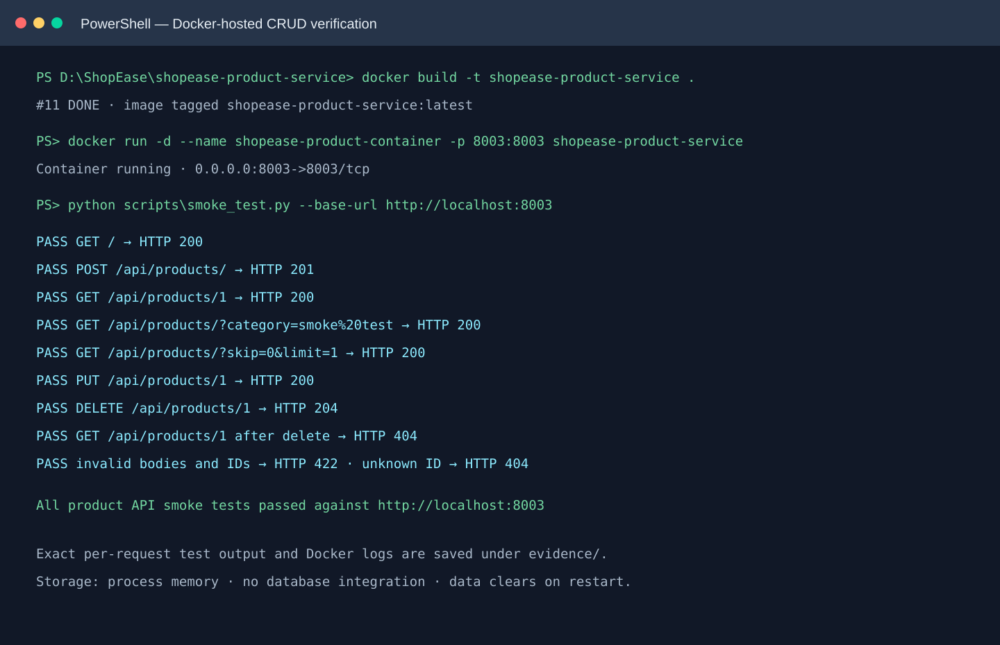
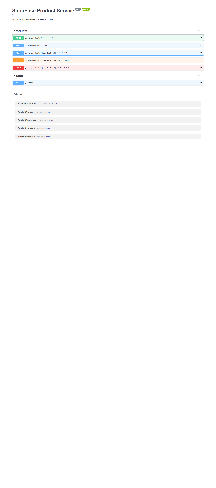

ShopEase · Backend engineering
Product Service
Project Report
A FastAPI product catalog service with five CRUD endpoints, validated schemas, in-memory storage, and Docker packaging.
PythonFastAPIPydanticIn-memoryDocker
Report contents
01 · Project overview
06 · In-memory storage
02 · Technology and structure
07 · Docker build and run
03 · Architecture and request flow
08 · Live API evidence
04 · REST API design
09 · Testing and verification
05 · Validation and errors
10 · Setup, security, and limitations
Storage behavior: all product records are held in process memory. CRUD is available while the service runs; data clears when the process/container restarts. No database is integrated for this assignment.
SHOP EASE · PROJECT REPORT01 / OVERVIEW
01 · Project overview
Purpose and scope
ShopEase Product Service exposes a small, independent HTTP API for managing catalog products.
Clients send JSON requests to FastAPI routes. Pydantic validates request data, the route delegates to the product service, and a repository performs data access. The running application uses a thread-safe in-memory repository.
Core capabilities- Create a product
- List, category-filter, and paginate
- Read one product by ID
- Replace product fields
- Delete a product
Operational goals- Typed request and response schemas
- Stable REST status codes
- Containerized Uvicorn service
- Five complete CRUD operations
- Testable repository/service boundary
Product fields
| Field | Purpose | Validation / storage |
|---|
| id | Product identifier | Database-generated integer |
| name, description | Display text | Up to 100 and 1000 characters |
| price | Unit price | Positive, at most 4 decimal places |
| stock_quantity | Available stock | Integer ≥ 0 |
| category, status | Catalog grouping and state | Status: Active or Inactive |
| created_at | Creation timestamp | UTC timestamp generated by the service |
SHOP EASE · PROJECT REPORT02 / STACK
02 · Technology and structure
Technology stack
| Layer | Technology | Role |
|---|
| Runtime | Python 3.11+ | Application language |
| HTTP API | FastAPI + Uvicorn | Routes, ASGI serving, OpenAPI docs |
| Validation | Pydantic | Request parsing and response shaping |
| Storage | Python dictionary + threading.Lock | Temporary process-local product collection |
| Container | Docker / Compose | Repeatable image and runtime |
| Verification | pytest, Swagger UI, Postman | Automated and manual API checks |
| Source control | Git / GitHub | Versioning and collaboration |
Code organization
app/
main.py FastAPI app and health route
config/settings.py environment-backed settings
routers/ HTTP endpoints
schemas/ Pydantic validation
models/ product data model
services/ application-level operations
repositories/ repository protocol + in-memory storage
db/ connection and migration runner
tests/ API behavior and validation checks
Dockerfile / compose.yaml container build and run settings
Separation of concerns: routes call the service, which delegates to the in-memory repository. This keeps HTTP behavior independently testable.
SHOP EASE · PROJECT REPORT03 / ARCHITECTURE
03 · Architecture and request flow
Layered request path
Each request passes through typed layers. Validation happens before business logic or a storage operation is attempted.
Client
Swagger UI · Postman · web client
↓ HTTP / JSON
Uvicorn
ASGI server listening on port 8003 in Docker
↓ ASGI request
FastAPI router + Pydantic schema
Route matching, field validation, HTTP status
↓ validated values
Product service
Catalog operations
↓ repository calls
In-memory repository → Python dictionary
Data lives only while the process runs
Response path
The repository returns a product model, the response schema shapes it, and FastAPI serializes JSON with the route's declared status code. Unexpected exceptions are logged server-side and return a generic 500 response.
Design benefits
- Input validation is consistent and visible in generated OpenAPI docs.
- The service layer provides a stable seam between routes and storage.
- The dictionary is protected by a lock for concurrent requests.
- Restart behavior is easy to understand: volatile product data is cleared.
SHOP EASE · PROJECT REPORT04 / API
04 · REST API design
Product endpoints
| Method | Path | Behavior | Success |
|---|
| POST | /api/products/ | Create product | 201 |
| GET | /api/products/ | List / filter / paginate | 200 |
| GET | /api/products/{id} | Read by ID | 200 |
| PUT | /api/products/{id} | Replace product fields | 200 |
| DELETE | /api/products/{id} | Delete by ID | 204 |
Create request example
{
"name": "Headphones",
"description": "Wireless headphones",
"price": 25.50,
"stock_quantity": 20,
"category": "Accessories",
"status": "Active"
}
List and error behavior
GET /api/products/?category=Accessories&skip=0&limit=10 supports optional case-insensitive category matching and pagination. Unknown product IDs return 404. Invalid path or request data returns 422.
Try endpoints interactively at http://localhost:8003/docs when the service is running. Use the same host and port in Postman.
SHOP EASE · PROJECT REPORT05 / VALIDATION
05 · Validation and errors
Guarding the API boundary
Pydantic schemas reject malformed or out-of-range input before it reaches the product service. Unexpected fields are forbidden so client mistakes are not silently ignored.
| Input | Rule | Example rejected |
|---|
| name / category | Trimmed, non-empty, max 100 chars | Spaces only |
| description | Optional, max 1000 chars | Whitespace-only text |
| price | Strict positive number, max 4 decimals | 0, negative, 0.00001 |
| stock_quantity | Strict integer ≥ 0 | -1 or a decimal |
| status | Active or Inactive | Pending |
| product_id | Integer greater than zero | 0 or non-numeric text |
HTTP status summary
200 OK
Read or update succeeded.
201 Created
Product created.
204 No Content
Delete succeeded.
404 Not Found
Product ID does not exist.
422 Unprocessable Entity
Invalid request, path, or query.
500 Internal Server Error
Unexpected server-side failure.
Storage boundary: all five product operations run against process memory. No database is required or integrated.
SHOP EASE · PROJECT REPORT06 / STORAGE
06 · In-memory storage
Repository and data lifecycle
The application creates one in-memory repository at startup. It stores products in a Python dictionary indexed by generated integer IDs.
| Operation | In-memory behavior |
|---|
| Create | Allocate the next ID, timestamp in UTC, add to dictionary |
| Read/list | Read dictionary; list supports category filtering and pagination |
| Update | Replace editable fields and preserve ID/creation timestamp |
| Delete | Remove ID from dictionary and report whether it existed |
Concurrency and limits
A thread lock protects dictionary reads/writes. This storage is intentionally temporary: products disappear when the Python process or container restarts. No MySQL or other database is part of this assignment.
Important: do not expect records to survive a container recreation. Use this implementation to demonstrate CRUD and Docker-hosted API behavior, not durable production persistence.
Price validation
The API requires a positive price with at most four decimal places, and rejects invalid values before saving the product in memory.
SHOP EASE · PROJECT REPORT07 / DOCKER
07 · Docker build and run
Container output
The Docker image uses Python slim, installs the pinned application requirements, copies the app package, and starts Uvicorn on port 8003.
docker build -t shopease-product-service .
docker run -d --name shopease-product-container -p 8003:8003 shopease-product-service
docker ps
docker logs shopease-product-container
python scripts\smoke_test.py --base-url http://localhost:8003

Summary of the verified image, standalone container, and smoke test. Docker output and per-request results are saved under evidence/.
Where to test
- Health: http://localhost:8003/
- Swagger UI: http://localhost:8003/docs
- OpenAPI: http://localhost:8003/openapi.json
SHOP EASE · PROJECT REPORT08 / LIVE OUTPUT
08 · Live API evidence
Running service responses
The standalone container was checked over the published local port. The screenshot below shows the actual Swagger UI exposed by the running container.

Actual browser screenshot from the live container; GET / returned 200.

Captured from http://localhost:8003/docs; it displays all five product operations.
SHOP EASE · PROJECT REPORT09 / TESTS & NEXT STEPS
09 · Testing and verification
What passed and what remains
| Check | Result | What it proves |
|---|
| pytest | 18 passed | API CRUD behavior, validation, and in-memory default |
| pip check | Passed | No broken installed requirements |
| Python compileall | Passed | Application and test modules compile |
| Docker build | Passed | Image assembles with application dependencies |
| Container health | HTTP 200 | App starts and root route responds |
| Swagger / OpenAPI | HTTP 200 | Docs and schema endpoints are served |
| Memory lifecycle | 201 → restart → 404 | Confirms product data is intentionally temporary |
Docker CRUD smoke test: passed against http://localhost:8003, including create (201), list/read/update (200), delete (204), invalid input (422), and missing/deleted IDs (404). Full per-request output is in evidence/docker-crud-smoke-test.txt.
Submission and team walkthrough
- Review the source, this report, and the evidence files.
- Each member should trace a request from route through schema/service to repository.
- Demonstrate the five CRUD endpoints in Swagger or Postman.
- Explain why data is cleared when the process restarts.
- Commit and push the source and sanitized evidence to GitHub.
Team learning: every member should be able to trace a request from route to schema, service, and repository, then explain the returned HTTP status.